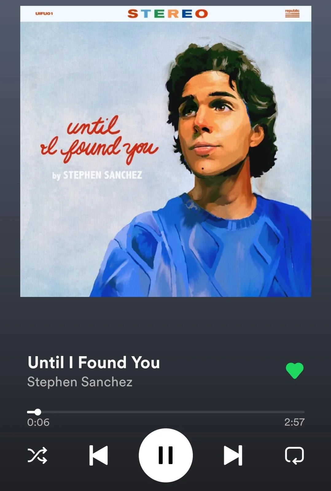
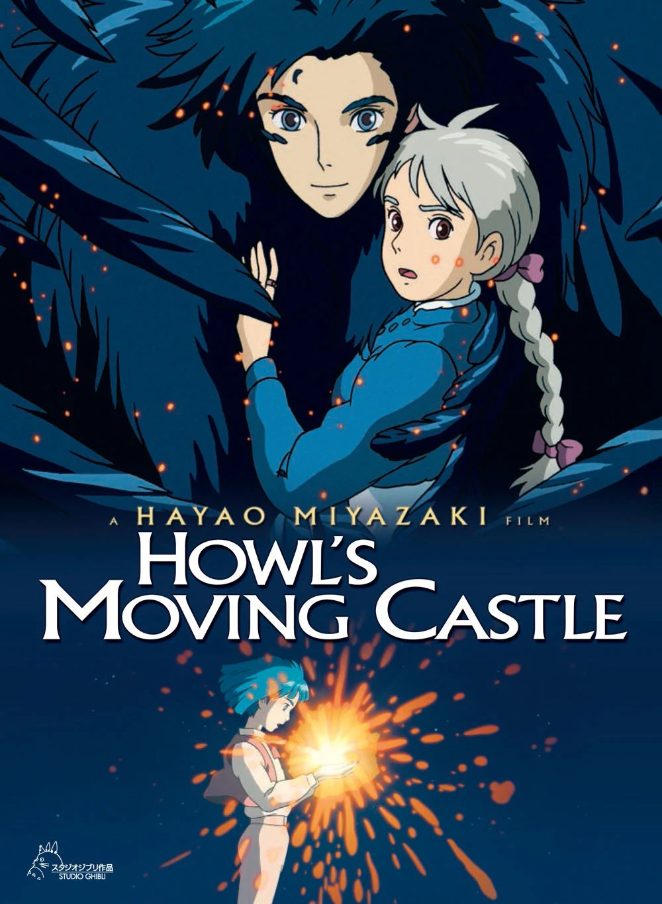

My favourite singer
Kim Tae-yeon born 9 March 1989, known mononymously as Taeyeon, is a South Korean singer. She debuted as a member of girl group Girls' Generation in August 2007, which went on to become one of the best-selling artists in South Korea and one of the most popular K-pop groups worldwide.

My favourite song
Until I Found You is a song by American singer-songwriter Stephen Sanchez. It was released on 1 September 2021 as the lead single from Sanchez's second extended play Easy on My Eyes. Written by Sanchez and produced by Ian Fitchuk and Konrad Snyder, the song peaked at number 23 on the Billboard Hot 100, number 8 on the Australian ARIA chart and at number 14 on the UK Singles Chart.

My favourite anime
Howl's Moving Castle is a 2004 Japanese animated fantasy film written and directed by Hayao Miyazaki.It is loosely based on the 1986 novel of the same name by British author Diana Wynne Jones.The film is set in a fictional kingdom where both magic and early twentieth-century technology are prevalent, against the backdrop of a war with another kingdom.